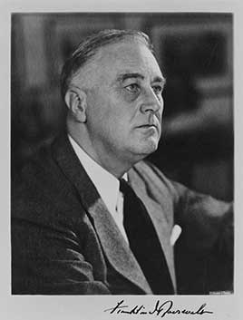

Elected four times, more than any other president. He took office at the bottom of the Great Depression and launched the New Deal: bank reform, Social Security, the WPA, union rights and the first federal minimum wage. His 1937 plan to add justices to the Supreme Court failed. He led the country through most of World War II and died in office in April 1945.
Shaded areas show the years in office, with a few years before and after for comparison. Budget years ran July to June until 1976 (now October to September), so each year's figures cover parts of two calendar years.
June 30, 1932 (end of fiscal 1932): $19.49 billion → June 30, 1944 (end of fiscal 1944): $201.00 billion
Daily debt figures don't exist before 1993, so Roosevelt's numbers use the fiscal years closest to his term, the same rule as every other page. About $152 billion of the increase came during World War II (fiscal 1942 to 1944). By June 30, 1945, 11 weeks after his death, the debt was $258.7 billion.
Debt as a share of GDP. Above 100% means the debt is bigger than a year of everything the country produces.
Money borrowed each budget year (below the line) or paid down (above).
1933: 24.9% → 1945: 1.9%. Yearly averages; monthly figures begin in 1948. Estimates by economist Stanley Lebergott, which count people in New Deal work programs as unemployed.
How much prices rose each year (consumer price index).
What everyday prices and paychecks did while in office.
Prices use the consumer price index (MeasuringWorth). The minimum wage is the federal rate set by Congress.
3,467 orders, numbered 6071–9537. The most of any president. The American Presidency Project counts 3,726 by including lettered orders such as 6467-A. The split between 1935 and 1936 may be off by up to five orders.
Source: National Archives: executive order tables (full list of every order).
Rules for reopening banks after the national bank holiday he declared on his second day in office.
Federal RegisterRequired Americans to turn in gold coins, bullion and certificates at $20.67 an ounce. The dollar was then devalued to $35 an ounce in 1934.
Federal RegisterCreated the WPA, which employed about 8.5 million people on public works over eight years.
Federal RegisterBanned discrimination by race, creed, color or national origin in defense industries and government, after A. Philip Randolph threatened a march on Washington.
Federal RegisterLet the military exclude people from 'military areas', leading to the incarceration of about 120,000 people of Japanese ancestry, two-thirds of them U.S. citizens. Formally rescinded in 1976.
Federal RegisterCreated the Office of Economic Stabilization to freeze wages, prices and farm prices during the war.
Federal RegisterA pardon wipes out the punishment for a federal crime; a commutation shortens a sentence but leaves the conviction. Counts are by federal fiscal year (July to June). The Justice Department counts fiscal 1933, including Roosevelt's first four months, under Hoover. At Christmas 1933 he also restored civil rights by proclamation to people who had served sentences under World War I espionage and draft laws.
Source: U.S. Dept. of Justice, clemency statistics, which lists every recipient with the crime and sentence.
The crime: Passport fraud (convicted 1940)
Sentence: Four years; served about 14 months
Why it drew attention: The head of the Communist Party USA. Roosevelt released him as a gesture of unity after the Soviet Union became a wartime ally.
SourceThe same checklist for every president. Tap a row for details and sources.
No articles of impeachment were voted on.
Never charged.
No member of his cabinet or White House staff was convicted.
None were appointed.
The Church Committee (1975–76) found Roosevelt had the FBI investigate critics of his foreign policy, including people who sent telegrams opposing it, and authorized wiretaps in 1940 despite Supreme Court rulings limiting them.
SourceNo one in the administration was charged or formally penalized.
What happened, what was proven, and how it ended.
About 120,000 people of Japanese ancestry, most of them U.S. citizens, were forced from their homes on the West Coast into camps under his Executive Order 9066.
Outcome: The Supreme Court upheld it in Korematsu (1944). Congress apologized and paid $20,000 to each survivor in 1988; the Court repudiated Korematsu in 2018.
SourceAfter the Supreme Court struck down New Deal laws, Roosevelt proposed adding up to six justices.
Outcome: The Senate, controlled by his own party, sent the bill back to committee 70–20 and it died.
SourceThe U.S. refused entry to the ship St. Louis carrying 937 passengers, almost all Jewish refugees from Germany. It returned to Europe, where 254 of them were later killed in the Holocaust.
Outcome: Immigration quotas were set by law; how much Roosevelt could or should have done is debated.
SourceThe FBI investigated and wiretapped opponents of his foreign policy at the White House's request.
Outcome: Documented by the Church Committee in 1976.
SourceAmericans had to turn in their gold, and Congress voided contract clauses requiring payment in gold, before the dollar was devalued.
Outcome: The Supreme Court upheld the policies 5–4 in the Gold Clause Cases (1935).
SourceRoosevelt hid how much polio had paralyzed him, and in 1944 the seriousness of his heart disease while running for a fourth term.
Outcome: He died less than three months into that term.
SourceWidely quoted remarks, with the context they were said in.
The only thing we have to fear is fear itself.
I see one-third of a nation ill-housed, ill-clad, ill-nourished.
Your boys are not going to be sent into any foreign wars.
Yesterday, December 7th, 1941 — a date which will live in infamy — the United States of America was suddenly and deliberately attacked.